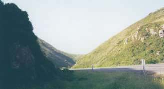

|
New Year's Day San Bruno Mountain Hill Climb Brisbane |
|
Results are in!!!
1996 Low-Key Hillclimb pages
Results from 1996 San Bruno Hillclimb
San Bruno Mountain homepage
San Bruno Hillclimb Entry/Release Form
Peninsula Velo of San Mateo Presents...
|
|
New Year's Day San Bruno Mountain Hill Climb Brisbane |
|
Results are in!!!
1996 Low-Key Hillclimb pages
Results from 1996 San Bruno Hillclimb
San Bruno Mountain homepage
San Bruno Hillclimb Entry/Release Form
|
Low-Key, Team Colwell Dominate
Undeterred by the Biblical-scale deluge and storm-force winds battering the Peninsula, Low-Key Hillclimbers were out in force for the not-so-low-key launch to the 1997 racing season, the San Bruno Hillclimb. And, fresh off their series victories, Men's cat 5 Tracy Colwell and women's cat 3 Liz Benishin (both Alto Velo) showed the USCF regulars they meant business by taking the overall wins. Meanwhile, women's cat 4 Julie Colwell (Alto Velo) showed her contribution to the Team Colwell sweep of the Old La Honda No-Key was no fluke, as she finished a close second, thus establishing herself as a USCF force to be reckoned with. In addition to the cat 3, cat 4, and overall top women's placings and the overall and cat 5 men's placings, Low-Key alumni also took first in the men's cat 4, third in the men's cat 5, and 3rd and 4th in the women's overall. Tracy's victory opened the eyes of many in attendance, as he dropped cat 1 national-champion master's rider Glen Winkle (United States Postal Service) during the final mist-enshrowded meters while holding off a late-charging Casper Rubalcava (cat 3; NorthCoast) to cross the line first. While temperatures were in the cozy low-60F range, gusting headwinds were a substantial factor in the race. But even with Tracy riding from the front during most of the 3.8 mile climb, Glen was unable to hang on at the end. Winkle noted the irony that he received the top prize on the day (winner -- men's cat 1-2-Pro) despite getting beaten in the finale. However, given Tracy and Julie's showings to date, it won't be long into the new year before the top categories have to compete with them officially as well as unofficially.
Results are in, with a
report from the lead vehicle by Linelle Betts!!! |
Date: Jan 1, 1997 Rain or Shine
Format: A mass start vent with prizes by category
Time: Registration at 9:00 am and start at 10:00 am
Location: East side of the mountain at the corner of Guadalupe Canyon Parkway and Old Bayshore Highway in Brisbane.
|
Event Description: After the mass-start, riders tackle the east side of San Bruno, with its steady 7-8% grades. Approximately half-way, the road levels, where you'll turn and enter the park. Don't let up the effort though! You'll then pass under a tunnel into the final stretch, where the narrow road tackles a series of switchbacks at 8% to 10% grade. Rounding the last, the finish will will be close ahead. Give it everything you have all the way to the line! Portable trainers for warming up are recommended. Weather could be cold and wet are 70+ F and sunny -- be prepared... |
 |
Directions: Southbound on Highway 101, exit Sierra Point-Brisbane turnoff. Proceed west on Lagoon Way for 1/4 mile and turn left on Tunnel Ave. go 1/2 mile and turn right on Bayshore Blvd. Proceed 1/4 mile to intersection of Guadalupe Parkway and Bayshore Blvd. Northbound on Highway 101, take Brisbane exit and proceed 1 1/2 miles north to the intersection of Guadalupe Parkway and Bayshore Blvd.
Rules: All USCF rules apply. Official follow vehicle only.
Prizes: See the table below.
Fee: Entry of $12 received before Dec. 20th 1996. Entry fee after Dec. 20
is $17. Mail
standard
release form and check payable to Peninsula Velo,
to Kevin Kiel, 14 Culver Ct. San Mateo, CA 94403.
If you've finished 5 or more of the 1996 Low-Key Hillclimbs, take $5 off the San Bruno fee if you pre-reg!!!
Categories:
|
||||||||||||||||||||||||||||||
| * Note : With the availability of 1-day at-site licenses as of 1997, the "public category" may be folded into the others. Those who would otherwise race public will then be USCF-licensed for the day, and would rank instead in the appropriate category. |
For more information call Cyclepath 415-341-0922 or Kevin 415-349-8033 evenings before 9:00 pm. Or, send email to Linelle Betts (linelle.betts@brakeless.com).